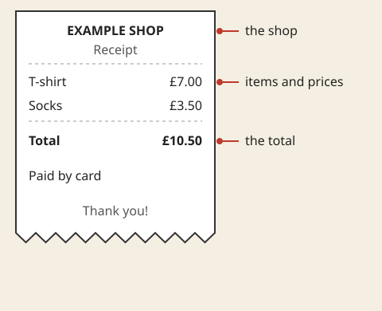

Konsum, Werbung und deine Rechte
Mit einem KI-Tutor lernen
Ein KI-Tutor erklärt dir diese Seite und hilft dir bei den Aufgaben. Wähl deinen Assistenten:
Mit Claude öffnen Mit ChatGPT öffnen Mit Mistral Vibe öffnen
Du nutzt dein eigenes Konto beim Anbieter. Der Assistent ist kein Angebot von lernapps.net: lernapps liefert nur Inhalte und Aufgaben. Die Wahl gilt für alle Seiten, nur auf diesem Gerät.
Was zeigst du, wenn etwas kaputt ist?
Du kaufst in einem Geschäft in Großbritannien ein T-Shirt. Zu Hause siehst du ein Loch im Stoff. Du gehst am nächsten Tag zurück in den Laden. Der Sachtext danach hat nummerierte Absätze. Zahlen und Aussagen belegst du mit der Absatznummer.
Aufgabe
Lösung
Ein Foto vom Schaufenster
Das zeigt nur, dass es den Laden gibt.
Die Werbung des Ladens
Eine Werbung zeigt nicht, dass du etwas gekauft hast.
Den Kassenbon richtige Antwort
Der Bon zeigt, was du wann bezahlt hast.
Einen Beleg über den Kauf kannst du vorzeigen.
Das kannst du danach: Du sprichst über Kleidung, Werbung und Konsum, nennst deine Rechte beim Einkaufen und sagst deine Meinung zu einem Kauf mit Grund und Beispiel.
Billige Kleidung und deine Rechte
| Englisch | Deutsch |
|---|---|
| consumer | Verbraucherin, Verbraucher |
| fast fashion | schnelle, billige Mode |
| brand | Marke |
| advert, ad | Werbung, Anzeige |
| sustainable | nachhaltig |
| second-hand | gebraucht gekauft |
| landfill | Mülldeponie |
| emissions | Abgase, Ausstoß |
| faulty | fehlerhaft, kaputt |
| refund | Geld zurück |
| repair, replace | reparieren, ersetzen |
| warranty | Garantie des Herstellers |
| receipt | Kassenbon |
| in the sale | im Angebot (reduziert) |
| till | Kasse |
| garment | Kleidungsstück |
| textiles | Stoffe, Textilien |
| cancel | widerrufen, stornieren |
| proof of purchase | Kaufbeleg |
| label | Etikett |
Der Text ist ein eigener Text nach Fakten aus Wikipedia („Fast fashion“) und von gov.uk („Accepting returns and giving refunds: the law“), Stand 24. November 2026. Die Zahlen sind die Absätze.
1 Many young people like new clothes, and shops are happy to sell them. The term fast fashion describes shops that copy new trends quickly and sell them cheaply. Brands often use adverts on social media to make the newest styles look exciting. According to a market report that Wikipedia quotes, about 36% of the clothing purchases in the world in 2026 belong to this group.
2 There are good reasons for this. Low prices mean that more people can wear the latest styles, and one estimate says that the industry gives work to roughly 60 to 70 million people. For many consumers, a cheap top for a party is simply a good deal.
3 However, there is another side. The United Nations Environment Programme says that people buy about 60% more clothes than they used to, but keep each item for only half as long. It also says that every second, the equivalent of a truckload of old textiles is buried in landfill or burned. Wikipedia gives an estimate of 2 to 8% of the world's greenhouse gas emissions for the fashion industry.
4 What can consumers do? A study of polyester and cotton T-shirts, mentioned by Wikipedia, estimated that if a T-shirt is worn for longer, its carbon emissions could fall by about half. That is why some people prefer second-hand clothes, repair a jumper instead of throwing it away, or look for sustainable brands. Others say that they cannot pay more for quality, or that clothes and brands are a way to show who you are. Both sides have a point.
5 Adverts and trends can make you want something, but when you pay, the law protects you. In Britain you have rights as a buyer, and the government explains them on gov.uk. In a sale, your rights are exactly the same as at full price. A shop is not allowed to put up a sign that says "no refunds" to take them away.
6 If an item is faulty, not as described or does not do what it is supposed to, the shop must offer a full refund. There is an exception: if you knew about the fault when you bought the item, you cannot ask for your money back. If you only change your mind in a shop, for example because the size or the colour is wrong, the shop does not have to give it back either.
7 Online, it is different. You can cancel an order within 14 days after you receive the item, and then you have another 14 days to send it back. The shop must refund you within 14 days of getting it back.
8 If you find a fault later, you can ask for a repair or a replacement. Within six months, the shop must repair or replace the item, unless it can prove that the item was not faulty. You can make a claim for up to six years (five in Scotland). A warranty does not take these rights away. The shop may ask for proof of purchase, for example a receipt, a bank statement or the packaging.
Beleg, Mengen und Pro und Contra

© CC-BY-4.0Ein Bon aus einem erfundenen Geschäft. Rechts steht, was die Zeilen zeigen.
Merke
Pro und Contra. Ein Pro ist ein Grund dafür, ein Contra ein Grund dagegen. Im Sachtext stehen oft beide.
Kleine Wörter, große Fehler.
- consumer ist eine Person, die etwas verbraucht oder kauft, ganz allgemein. customer ist die Kundin oder der Kunde in einem Geschäft: The customer in the bakery wants two rolls.
- much gehört zu Dingen, die du nicht zählst, many zu Dingen, die du zählst: How much water? How many bottles?
- buy heißt kaufen, by heißt mit oder bei: She buys a magazine. I travel by bus.
- borrow heißt sich etwas leihen, lend heißt jemandem etwas leihen: I borrow a book. The library lends me the book.
- in the sale heißt reduziert: All bags in this shop are in the sale today.
Zahlen belegen, Rechte zuordnen, Wörter wählen
Aufgabe
Lösung
Kleidung, die besonders lange hält
Absatz 3 sagt das Gegenteil, die Stücke werden kürzer getragen.
Neue Trends werden schnell kopiert und billig verkauft richtige Antwort
So beschreibt es Absatz 1.
Kleidung, die es nur in großen Städten gibt
Davon steht im Text nichts.
Das Wort fast beschreibt, wie schnell neue Mode in die Läden kommt.
Aufgabe
Lösung
Richtige Antwort: 36 % der Käufe von Kleidung weltweit – Absatz 1; Etwa 60 % mehr Kleidung als früher – Absatz 3; 14 Tage, um online zu widerrufen – Absatz 7; Sechs Monate für Reparatur oder Ersatz – Absatz 8
Zahlen findest du schnell, wenn du den Text nach ihnen durchsuchst.
Aufgabe
Lösung
Richtige Antwort: Ein kaputtes T-Shirt war im Angebot. – Die Rechte sind wie bei vollem Preis.; In der Filiale passen die Jeans nicht, sie haben aber keinen Fehler. – Der Laden muss kein Geld zurückgeben.; Du hast online bestellt und die Ware seit drei Tagen. – Du kannst die Bestellung noch widerrufen.; Nach vier Monaten reißt eine Naht, die schon fehlerhaft war. – Reparatur oder Ersatz, außer der Laden beweist das Gegenteil.
Entscheidend ist, ob es einen Fehler gibt und wo du gekauft hast.
Aufgabe
Wähle das passende englische Wort für die Lücke.
- Ich möchte Geld zurück für dieses T-Shirt. → I want a … for this T-shirt.
- Bring bitte den Kassenbon mit. → Please bring the ….
- Die Kundin an der Kasse wartet. → The … at the till is waiting.
- Ich gehe in den Laden, um einen Schal zu kaufen. → I go to the shop to … a scarf.
- Der Schal war im Angebot. → The scarf was in the ….
Lösung
- I want a refund for this T-shirt.
- Please bring the receipt.
- The customer at the till is waiting.
- I go to the shop to buy a scarf.
- The scarf was in the sale.
Aufgabe
Schreibe die Sätze auf Englisch. Satz 1: Wie viele Pullover hast du? Satz 2: Ich habe nicht viel Geld. Satz 3: Kannst du mir fünf Pfund leihen? Die englischen Wörter sind nur eine Hilfe: Ergänze, was für einen ganzen Satz fehlt.
- how many · jumpers · you · have
- I · not · have · much · money
- can · you · lend · me · five pounds
Lösung
- How many jumpers do you have? (auch richtig: How many jumpers have you got?)
- I do not have much money. (auch richtig: I don't have much money.; I have not got much money.; I haven't got much money.)
- Can you lend me five pounds? (auch richtig: Could you lend me five pounds?)
Aufgabe
Lösung
Old clothes often end up in landfill. richtige Antwort
Das ist ein Problem, siehe Absatz 3.
Cheap prices let more people follow trends.
Das ist ein Pro, siehe Absatz 2.
People keep clothes for only half as long as before. richtige Antwort
Das spricht gegen häufiges Kaufen, siehe Absatz 3.
Clothes can show who you are.
Das ist ein Pro, siehe Absatz 4.
Ein Contra nennt ein Problem, ein Pro einen Vorteil.
Aufgabe
Hör zu und schreibe, was du hörst.
- KI
- KI
- KI
Lösung
- I always keep the receipt when I buy something.
- Can I return this jacket if it is too small?
- Many people buy their clothes online nowadays.
Deine Meinung zu einem Kauf
Aufgabe
Hör zu, sprich nach und nimm dich auf. Vergleiche dann mit dem Original.
Tipp
Hör zu. Sprich dann langsam nach.
- Excuse me, I would like to return this jumper.KI
- Could you check the label, please?KI
- It is better to buy fewer clothes and wear them longer.KI
Zum Aufnehmen braucht diese Aufgabe JavaScript. Die Beispiele kannst du auch ohne anhören.
Lösung
- Excuse me, I would like to return this jumper.
- Could you check the label, please?
- It is better to buy fewer clothes and wear them longer.
Offene Aufgabe
Wähle einen Kauf, zu dem du eine Meinung hast (zum Beispiel Sportschuhe, ein Spiel oder eine Jacke). Schreibe in fünf bis sechs Sätzen deine Meinung mit Grund und Beispiel und nenne eine andere Sicht.
Tipp
Die App bewertet nicht. Prüfe deinen Text anhand der Punkte.
Eine gute Antwort enthält:
Lösung
I think a good pair of trainers is worth the money. Good trainers last longer, because the material is strong. For example, my last pair lasted three school years. Some people say cheap trainers are the better deal, but they often break after a few months. So I buy fewer trainers, and I keep the receipt in case there is a fault.
Wie es weitergeht
Auf der nächsten Seite beschreibst du Jugendkulturen früher und heute, auch ihre Musik.
Fehler gefunden oder eine Idee für diese App?